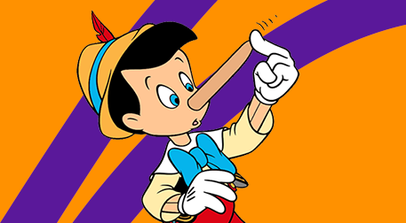
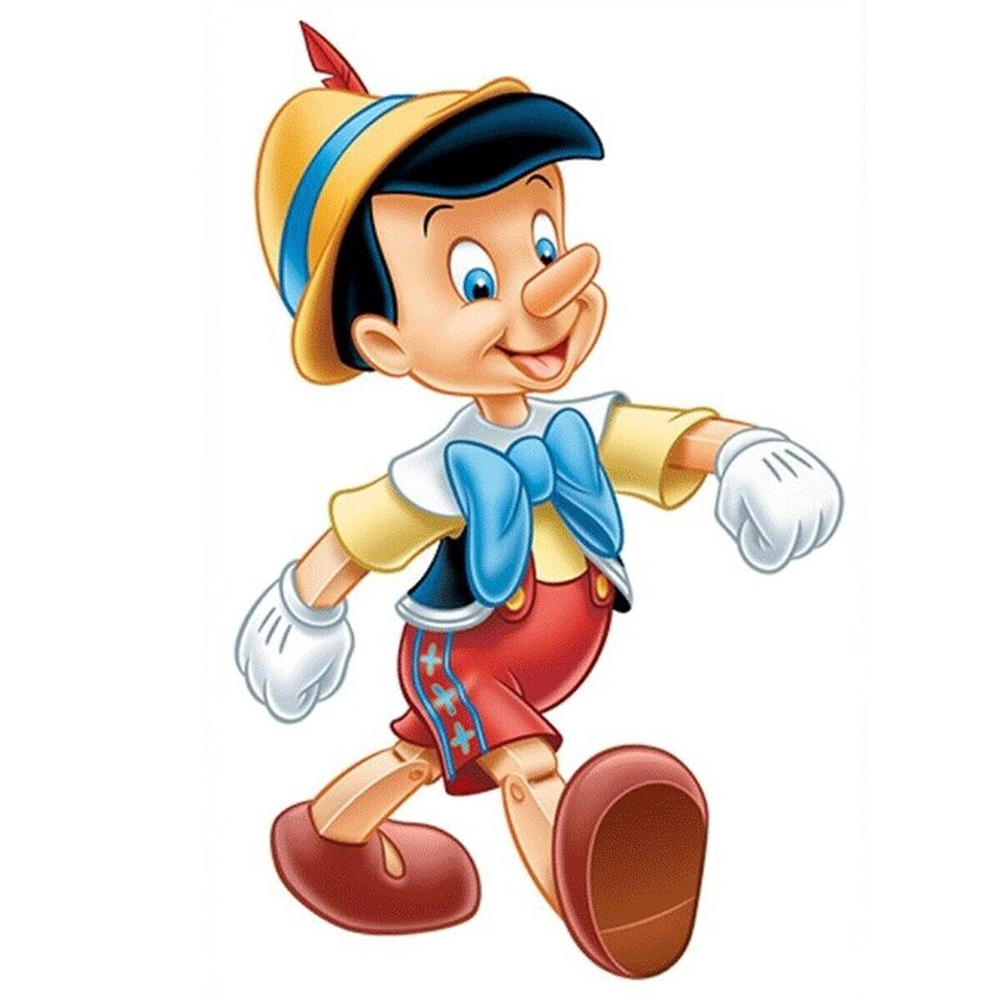
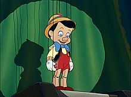
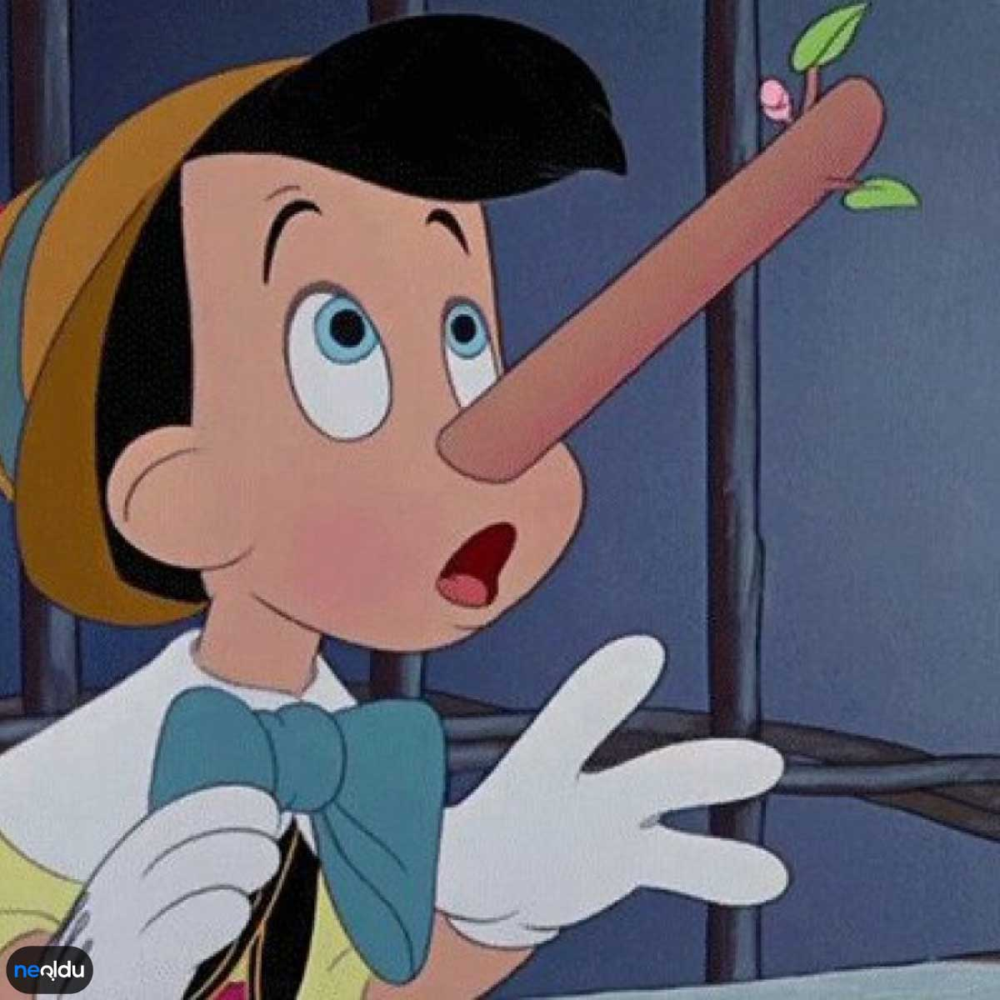
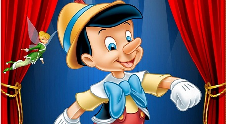

Bölüm 1: Geppetto'nun Dileği
Bir marangoz olan Geppetto, odun parçasından yaptığı tahta bebekle birlikte yaşar. Geppetto, Pinokyo adını verdiği bu tahta bebek için bir baba figürü olmayı diler ve bir gece yıldızlara bu dileğini söyler. O gece, bir peri çocuğa hayat verir.
Bölüm 2: Pinokyo'nun Maceraları Başlıyor
Pinokyo, gerçek bir çocuk olma hayaliyle dolup taşar, ancak masumiyetsiz ve yaramaz bir karaktere sahiptir. Pinokyo, bir dizi macerada kendi başına kararlar alır ve bu kararlarının sonuçlarıyla yüzleşir.
Bölüm 3: Yalanın Bedeli
Pinokyo'nun en belirgin özelliği, yalan söylediğinde burnunun uzamasıdır. Pinokyo, yalan söyledikçe burnu giderek uzar ve bu durum ona ders olur. Bu bölümde, Pinokyo'nun yalanlarının getirdiği zorluklar anlatılır.
Bölüm 4: Pinokyo'nun İyi Kalpli Kararları
Pinokyo, doğru yolda olmayı ve iyi bir çocuk olmayı öğrenir. Güzel kalpli bir çocuk olabilmek için çeşitli zorluklarla baş etmek zorundadır. Bu bölümde Pinokyo'nun iyilik ve dürüstlük konusundaki çabaları vurgulanır.
Bölüm 5: Pinokyo'nun Gerçek Bir Çocuk Olması
Pinokyo, sonunda iyi bir çocuk olmayı başarır ve bir peri tarafından gerçek bir çocuğa dönüştürülür. Bu bölümde, Pinokyo'nun kişisel gelişimi ve olgunlaşmasıyla masal güzel bir şekilde sona erer.
